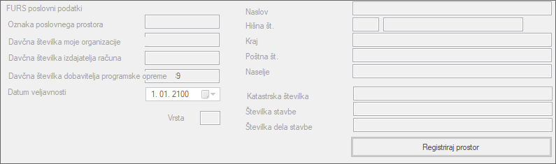
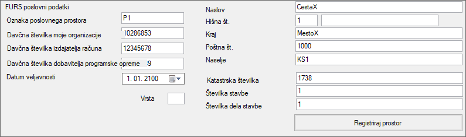

Nastavitve za komunikacijo z DAVČNO UPRAVO
POZOR!
Ob namestitvi programa Tangenta na vaš računalnik in prvem zagonu programa se Nastavitve za komunikacijo z Davčno upravo, nastavijo tako, da bo komunikacija potekala samo z FURS TESTNIM OKOLJEM z uporabo testnega certifikata podjetja Tangenta d.o.o.. V kolikor niste preizkuševalec programa, potem morate izbrati "FURS okolje"!Glede na to, da morate za pravilne nastavitve komunikacije z davčno upravo kar nekaj vedeti in za to verjetno nimate dovolj časa, da bi naštudirali vse kar je predpisala davčna uprava, vam predlagamo, da se obrnete na Pomoč in podpora uporabnikom.
FURS okolje
Z izbiro FURS okolja bo komunikacija programa Tangenta potekala direktno s pravim strežnikom za davčno potrjevanje računov!
FURS TESTNO okolje
V kolikor izberete FURS TESTNO okolje bo komunikacija potekala s TESTNIM okoljem, kar pa je dovoljeno
samo preizkuševalcem programske opreme. V kolikor ne gre za preizkus programa, potem morate izbrati FURS okolje!
FURS okolje
"FURS okolje" je vsebinsko enako "FURS TESTNO okolje", razlika je v tem, da so v FURS TESTNO okolje vnešeni
prednastavljeni podatki namišljenega podjetja, ki je v FURS TESTNEM okolju tudi že registrirano.
FURS Poslovni podatki
Nekatere FURS Poslovne podatke ste že vnesli v podatkovno bazo.
Tokrat morate na vsakem računalniku vaše poslovne enote te podatke vnesti ponovno
tako kot je predpisano s strani Davčne uprave, lahko pa se za to obrnete na Pomoč in podpora uporabnikom.

FURS poslovni podatki
Naslov
Oznaka poslovnega prostora
Hišna številka

Davčna številka moje organizacije
Kraj
Davčna številka izdajatelja računa
Poštna številka
Davčna številka dobavitelja programske opreme
Naselje
Datum veljavnosti
Katastrska številka
Številka stavbe
Vrsta poslovnega prostora
Številka dela stavbe
Registracija prostora
Potem, ko ste pravilno vnesli vse podatke potrebne za komunikacijo z davčno upravo,
morate registrirati poslovni prostor na davčni upravi tako, da kliknete na spodaj prikazani gumb.